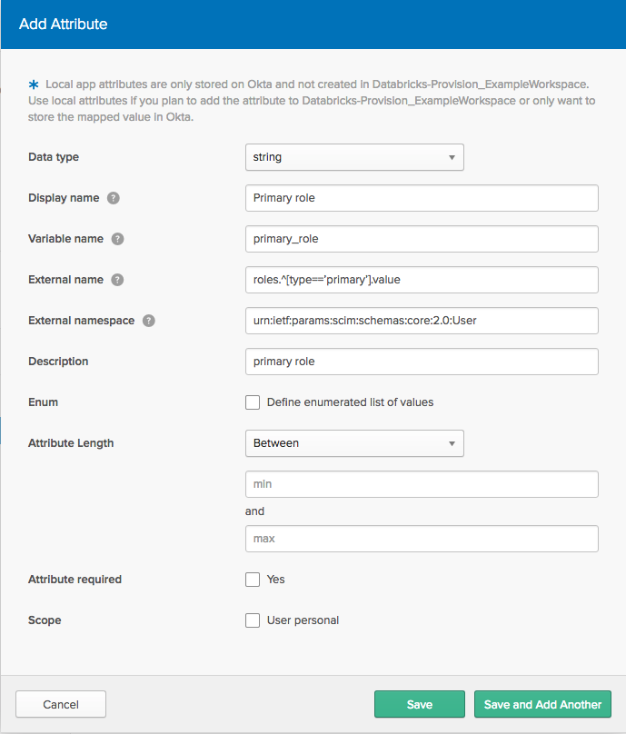
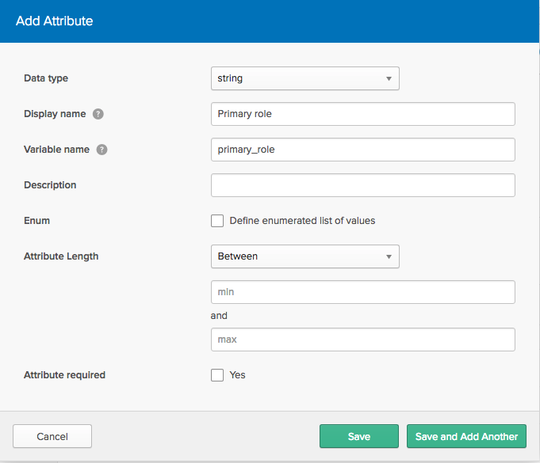

Configure SCIM provisioning for Okta
This article describes how to set up Databricks provisioning using Okta.
You can set set up provisioning at the Databricks account level or at the Databricks workspace level.
Databricks recommends that you provision users, service principals, and groups to the account level and assign users and groups to workspaces using identity federation. If you have any workspaces not enabled for identity federation, you must continue to provision users, service principals, and groups directly to those workspaces.
To learn more about SCIM provisioning in Databricks, including an explanation of the impact of identity federation on provisioning and advice about when to use account-level and workspace-level provisioning, see Sync users and groups from your identity provider.
To configure single sign-on with Okta see, Set up SSO for your workspace.
Features
Databricks is available as a provisioning app in the Okta Integration Network (OIN), enabling you to use Okta to provision users and groups with Databricks automatically.
The Databricks Okta application allows you to:
Invite users to a Databricks account or workspace
Add invited or active users to groups
Deactivate existing users in a Databricks account or workspace
Manage groups and group membership
Update and manage profiles
Requirements
Your Databricks account must have the Premium plan or above.
You must be an Okta developer user.
To set up provisioning for your Databricks account, you must be Databricks account admin.
To set up provisioning for a Databricks workspace, you must be Databricks workspace admin.
Set up account-level SCIM provisioning using Okta
This section describes how to configure an Okta SCIM connector to provision users and groups to your account.
Get the SCIM token and account SCIM URL in Databricks
As an account admin, log in to the Databricks account console.
Click
 Settings.
Settings.Click User Provisioning.
Click Enable user provisioning.
Copy the SCIM token and the Account SCIM URL. You will use these to configure your connector in Okta.
Note
The SCIM token is restricted to the Account SCIM API /api/2.0/accounts/{account_id}/scim/v2/ and cannot be used to authenticate to other Databricks REST APIs.
Configure SCIM provisioning in Okta
Log in to the Okta admin portal.
Go to Applications and click Browse App Catalog.
Search for Databricks in the Browse App Integration Catalog.
Click Add integration.
In Add Databricks configure the following:
In Application label, enter a name for your application.
Select Do not display application icon to users.
Select Do not display application icon in the Okta Mobile App.
Click Done.
Click Provisioning and enter the following:
In Provisioning Base URL, enter the SCIM URL you copied from Databricks.
In Provisioning API Token, enter the SCIM token you copied from Databricks.
Click Test API Credentials, verify the connection was successful, and then click Save.
Reload the Provisioning tab. Additional settings appear after a successful test of the API credentials.
To configure the behavior when pushing Okta changes to Databricks, click Provisioning to App.
Click Edit. Enable the features you need. Databricks recommends enabling Create users, Update user attributes, and Deactivate users.
In Databricks Attribute Mappings, verify your Databricks Attribute Mappings. These mappings will depend on the options you enabled above. You can add and edit mappings to fit your needs. See Map application attributes on the Provisioning page in the Okta documentation.
To configure the behavior when pushing Databricks changes to Okta, click To Okta. The default settings work well for Databricks provisioning. If you want to update the default settings and attribute mappings, see Provisioning and Deprovisioning in the Okta documentation.
Test the integration
To test the configuration, use Okta to invite a user to your Databricks account.
In Okta, go to Applications and click Databricks.
Click Provisioning.
Click Assign, then Assign to people.
Search for an Okta user, and click Assign.
Confirm the user’s details, click Assign and go back, and then click Done.
Log in to the account console, click User management, and then confirm that the user has been added.
After this simple test, you can perform bulk operations as described in Use Okta to manage users and groups in Databricks
Set up workspace-level SCIM provisioning using Okta
Preview
This feature is in Public Preview.
This section describes how to set up provisioning from Okta directly to Databricks workspaces.
Get the API token and SCIM URL in Databricks
As a Databricks workspace administrator, generate a personal access token. See Token management. Store the personal access token in a secure location.
Important
The user who owns this personal access token must not be managed within Okta. Otherwise, removing the user from Okta would disrupt the SCIM integration.
Make a note of the following URL, which is required for configuring Okta:
https://<databricks-instance>/api/2.0/preview/scim/v2Replace
<databricks-instance>with the workspace URL of your Databricks deployment. See Get identifiers for workspace objects.
Keep this browser tab open.
Configure SCIM provisioning in the Databricks SAML application in Okta
Go to Applications and click Databricks.
Click Provisioning. Enter the following information obtained from the above section:
Provisioning Base URL: the provisioning endpoint
Provisioning API Token: the personal access token
Click Test API Credentials.
Reload the Provisioning tab. Additional settings appear after a successful test of the API credentials.
To configure the behavior when pushing Okta changes to Databricks, click To App.
In General, click Edit. Enable the features you need. Databricks recommends enabling Create users at a minimum.
In Databricks Attribute Mappings, verify your Databricks Attribute Mappings. These mappings will depend on the options you enabled above. You can add and edit mappings to fit your needs. See Map application attributes on the Provisioning page in the Okta documentation.
To configure the behavior when pushing Databricks changes to Okta, click To Okta. The default settings work well for Databricks provisioning. If you want to update the default settings and attribute mappings, see Provisioning and Deprovisioning in the Okta documentation.
Test the integration
To test the configuration, use Okta to invite a user to your Databricks workspace.
In Okta, go to Applications and click Databricks.
Click Provisioning.
Click Assign, then Assign to people.
Search for an Okta user, and click Assign.
Confirm the user’s details, then click Assign and go back. Click Done.
In the Databricks workspace admin settings page, click Identity and access tab, then go to the Users section and confirm that the user is added. At a minimum, grant the user the Workspace entitlement.
After this simple test, you can perform bulk operations, as described in the following sections.
Use Okta to manage users and groups in Databricks
This section describes bulk operations you can perform using Okta SCIM provisioning to your Databricks account or workspaces.
Import users from the Databricks workspace to Okta
To import users from Databricks to Okta, go to the Import tab and click Import Now. You are prompted to review and confirm assignments for any users who are not automatically matched to existing Okta users by email address.
Add user and group assignments to the Databricks
To verify or add user and group assignments, go to the Assignments tab. Databricks recommends adding the Okta group named Everyone to the account-level SCIM provisioning application. This syncs all users in your organization to the Databricks account.
Push groups to Databricks
To push groups from Okta to Databricks, go to the Push Groups tab. Users who already exist in Databricks are matched by email address.
Delete a user or group from the account
If you delete a user from the account-level Databricks application in Okta, the user is deleted in the Databricks account and loses access to all workspaces, whether or not those workspaces are enabled for identity federation.
If you delete a group from the account-level Databricks application in Okta, all users in that group are deleted from the account and lose access to any workspaces they had access to (unless they are members of another group or have been directly granted access to the account or any workspaces). Databricks recommends that you refrain from deleting account-level groups unless you want them to lose access to all workspaces in the account.
Be aware of the following consequences of deleting users:
Applications or scripts that use the tokens generated by the user can no longer access Databricks APIs
Jobs owned by the user fail
Clusters owned by the user stop
Queries or dashboards created by the user and shared using the Run as Owner credential have to be assigned to a new owner to prevent sharing from failing
Delete a deactivated user from the workspace
If you delete a user from the workspace-level Databricks application in Okta, the user is deactivated in the Databricks workspace but is not removed from the workspace. A deactivated user does not have the workspace-access or databricks-sql-access entitlement. Reactivating a deactivated user is reversible, either by re-adding the user in Okta or by using the Databricks SCIM API directly. Removing a user from a Databricks workspace is disruptive and non-reversible.
Important
Do not deactivate the administrator who configured the Okta SCIM provisioning app. Otherwise, the SCIM integration cannot authenticate to Databricks.
To remove a user from a Databricks workspace:
In the admin settings page, go to the Users tab.
Click the x at the end of the line for the user.
Be aware of the following consequences of removing the user:
Applications or scripts that use the tokens generated by the user will no longer be able to access the Databricks API
Jobs owned by the user will fail
Clusters owned by the user will stop
Queries or dashboards created by the user and shared using the Run as Owner credential will have to be assigned to a new owner to prevent sharing from failing
Use Okta to manage workspace admins, entitlements, and IAM roles
Databricks supports the assignment of workspace admins, IAM roles, and workspace entitlements from workspace-level Databricks applications in Okta. The assignment of roles and entitlements is not supported from the account-level Databricks application in Okta. If you want to assign IAM roles and workspace entitlements from Okta, you must create a workspace-level Databricks application in Okta to that workspace.
Databricks recommends that you instead use an account-level Databricks application in Okta to provision users, service principals, and groups to the account level. You assign users and groups to workspaces using identity federation and manage their entitlements and IAM roles within Databricks.
Sync workspace admins
Databricks supports the assignment of the workspace admin role from the workspace-level Databricks application in Okta. Workspace admins are members of the Databricks admins group. Databricks groups are automatically pushed to Okta. To add a new admin user in Okta, add that user to the admins group.
Important
Do not remove the administrator who configured the Okta SCIM provisioning app, and do not remove them from the admins group. Otherwise, the SCIM integration cannot authenticate to Databricks.
Assign workspace entitlements from Okta
Databricks supports the assignment of entitlements from the workspace-level Databricks application in Okta. However, in most instances, Databricks recommends managing entitlements from within Databricks. Within Databricks, you can easily assign or revoke an entitlement. Configuring the mappings in Okta is complex, and you must configure two mappings for each entitlement.
This section describes how to configure the mappings to grant the databricks-sql-access entitlement to an Okta user.
Important
By default, Databricks users inherit the workspace-access and databricks-sql-access entitlements. By default, Databricks admin users inherit the create-cluster entitlement. You don’t need to assign these inherited entitlements from Okta.
To revoke an inherited entitlement from a user, either remove the user from the group or remove the entitlement from the group. To remove an entitlement, you must use the Databricks admin console.
To assign the databricks-sql-access entitlement:
In the Okta admin console, go to Directory > Profile Editor.
Click the Profile edit button for the Okta user profile.
Click the + Add Attribute button to add a role.
In the Add Attribute dialog, set the Display name to
Databricks SQLand the Variable name todatabricks_sql.Note
Okta variables cannot contain the hyphen (
-) character.Return to the Profile Editor and click the Profile edit button for the Databricks provisioning app user profile.
Click the + Add Attribute button to add a role.
On the Add Attribute dialog, give the role attribute the following values:
Display name:
Databricks SQLVariable name:
databricks_sqlExternal Name in the format
entitlements.^[type==‘$TYPE’].value.$TYPEis the API name of the entitlement without dashes (-). For example, the External Name fordatabricks-sql-accessisentitlements.^[type=='databrickssqlaccess'].value.
Important
In the External Name format, you must use apostrophe characters (
'). If you use curly quote characters (’), aRequest is unparseableerror occurs.External Namespace:
urn:ietf:params:scim:schemas:core:2.0:User.
Return to the Profile Editor and click the Mappings edit button for the Databricks provisioning app user profile.
For Databricks to Okta, map
appuser.databricks_sqlin the Databricks column todatabricks_sqlin the Okta column.For Okta to Databricks, map
user.databricks_sqlin the Databricks column todatabricks_sqlin the Okta column.Click Save Mappings.
To add an entitlement value to a user, go to Directory > People, select a user, and go to the Profile tab in the user page.
Click the Edit button. In the field for the entitlement, enter the API name of the entitlement without dashes, such as
databrickssqlaccess. When you assign the user to the app, the role is populated with the value that you entered.
Repeat this procedure to assign additional entitlements.
Assign IAM roles from Okta
In order to assign IAM roles to users from Okta, you must create a multi-valued attribute in the Okta user profile and the Okta Databricks provisioning app profile, and then map these attributes to attributes in the Databricks SCIM API. For example, if you want to assign two IAM roles to a user, you must create two attributes in the Databricks provisioning app and map one Okta user attribute to each.
Databricks recommends managing IAM role assignments from within Databricks. Within Databricks, you can easily assign or revoke an IAM role. Configuring the mappings in Okta is complex, and you must configure separate mappings for each IAM role.
The following instructions assign the primary_role attribute.
In the Okta admin console, go to Directory > Profile Editor.
Click the Profile edit button for the Okta user profile.
Click the + Add Attribute button to add a role.
In the Add Attribute dialog, set Display name to
Primary roleand Variable name toprimary_role.Return to the Profile Editor and click the Profile edit button for the Databricks provisioning app user profile.
Click the + Add Attribute button to add a role.
On the Add Attribute dialog, give the role attribute the following values:
Display name:
Primary roleVariable name:
primary_roleExternal Name in the format
roles.^[type=='$TYPE'].value, where$TYPEis a string describing the role; in this case, if $TYPE wereprimary, the External Name would be roles.^[type==’primary’].value.Important
In the External Name format, you must use apostrophe characters (
'). If you use curly quote characters (’), aRequest is unparseableerror occurs.External Namespace:
urn:ietf:params:scim:schemas:core:2.0:User.Return to the Profile Editor and click the Mappings edit button for the Databricks provisioning app user profile.
For Databricks to Okta, map
appuser.primary_rolein the Databricks column toprimary_rolein the Okta column.For Okta to Databricks, map
user.primary_rolein the Databricks column toprimary_rolein the Okta column.Click Save Mappings.
To add a role attribute value to a user, go to Directory > People, select a user, and go to the Profile tab in the user page.
Click the Edit button to enter a Primary role value for the user. When you assign the user to the app, the role is populated with the value that you entered.
Repeat this procedure to assign additional roles.
Limitations
Removing a user from the workspace-level Okta application deactivates the user in Databricks, rather than deleting the user. You must delete the user from Databricks directly.
You can reactivate a deactivated user by removing then re-adding them to Okta, with the exact same email address.
Troubleshooting and tips
Users without either First Name or Last Name in their Databricks profiles cannot be imported to Okta as new users.
Users who existed in Databricks prior to provisioning setup:
Are automatically linked to an Okta user if they already exist in Okta and are matched based on email address (username).
Can be manually linked to an existing user or created as a new user in Okta if they are not automatically matched.
User permissions that are assigned individually and duplicated through membership in a group remain after the group membership is removed for the user.
Users removed from a Databricks workspace lose access to that workspace, but they might still have access to other Databricks workspaces.
The
adminsgroup is a reserved group in Databricks and cannot be removed.You cannot rename groups in Databricks; do not attempt to rename them in Okta.
You can use the Databricks Groups API or the Groups UI to get a list of members of any Databricks workspace-level group.
You cannot update Databricks usernames and email addresses.